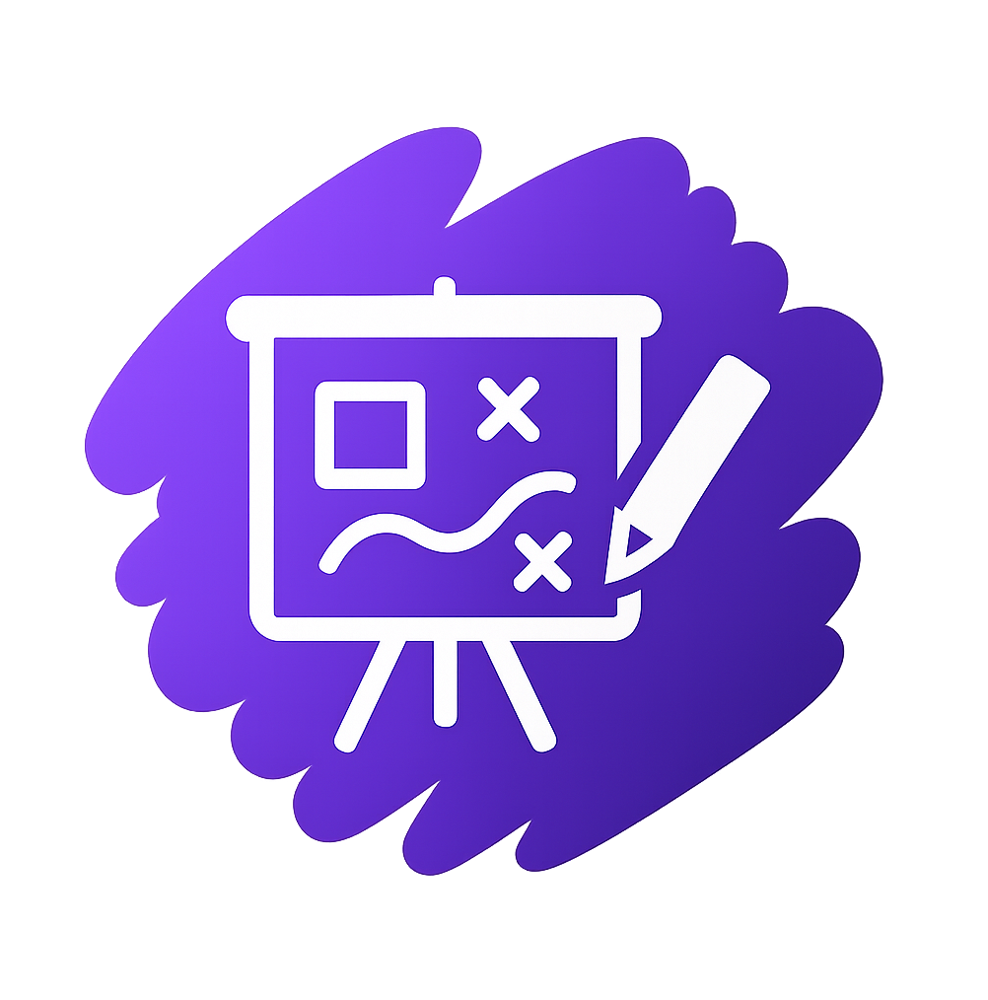

Interface
Desenvolvimento Web
- HTML5
- CSS
- JavaScript ES6+
- React.js
- React Hooks
- UI responsiva
- Integração REST
Engenharia de software orientada a impacto
Engenheiro de Software
Transformo problemas complexos em produtos digitais claros, rápidos e escaláveis, conectando arquitetura, experiência do usuário e estratégia de negócio.
Uma combinação de visão de produto, engenharia sólida e curiosidade constante.
 Senior AI Engineering Specialist
Senior AI Engineering Specialist
Sou Especiaista Sênior em Engenharia de IA e gosto de construir sistemas que permanecem simples para quem usa, mesmo quando são complexos por dentro.
Formação: Sou Técnico em Informática e atualmente curso Ciência da Computação, aprofundando conhecimentos em engenharia de software, estruturas de dados e arquitetura de sistemas distribuídos.
Experiência: Atuo há mais de 4 anos com desenvolvimento de soluções para ERP, integrações corporativas e plataformas web. Tenho experiência sólida em backend com Golang e Java, frontend moderno e infraestrutura com Docker e CI/CD.
Propósito: Transformar ideias em soluções sustentáveis, performáticas e fáceis de evoluir. Meu trabalho é guiado por clareza arquitetural, código limpo, segurança e melhoria contínua.
Ferramentas são meios. O objetivo é escolher a abordagem certa para cada problema.
Experiência prática em sistemas corporativos, integrações e produtos digitais.
Desenvolvimento e evolução de soluções para ERP, integrações corporativas, comunicação em tempo real, automação, observabilidade e experiências web.
Produtos que conectam pessoas, processos, dados e inteligência.
Editor visual com drag-and-drop para criação de páginas e microsites, reduzindo esforço operacional e acelerando publicações internas.

Ambiente visual multiusuário inspirado no Miro, criado para apoiar planejamento, ideação e colaboração entre equipes.

Comunicação entre departamentos com histórico, presença, notificações e atualização em tempo real integrada ao ERP.

Integração de atendimento, automações e notificações por WhatsApp com regras de negócio conectadas ao ecossistema corporativo.

Assistente com contexto, recuperação de informação e respostas personalizadas para atendimento e suporte dentro da plataforma.

Visualização de indicadores em tempo real com painéis configuráveis, foco em leitura rápida e apoio à tomada de decisão.

Ambiente integrado para Java, frontend e banco de dados, com edição, execução, destaque de sintaxe e integração direta ao ERP.

Estou aberto a conexões, novos desafios e conversas sobre software, arquitetura, produtos digitais e inteligência artificial.